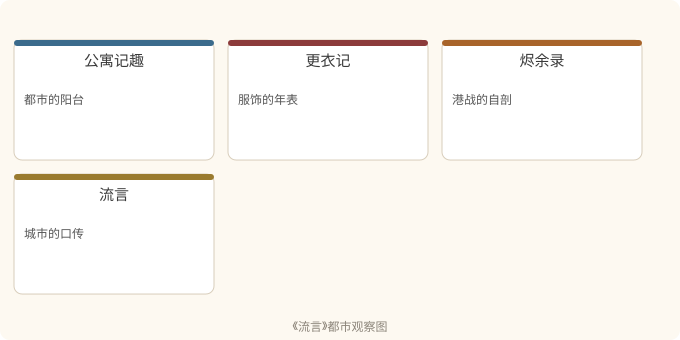

流言
一、基本信息
| 作者 | 张爱玲 |
|---|---|
| 成书/出版 | 1944年（作者页 B111 口径：流言（1944）） Zhang Ailing (Eileen Chang) — Encyclopaedia Britannica（百科全书） |
| 国别/地区 | 中国 |
| 时代 | 现当代 · 现代 |
| 体裁 | 散文集 |
| 语言 | 汉语（白话） |

《流言》都市观察图（主题·结构图）
二、创作背景
作者页（B111）：张爱玲 major_works 载'流言（1944）'——其散文代表作（B111 作者页定位，详见 jinsuoji 条核对）。
篇目（通说待核）：《中国的日夜》《公寓生活记趣》《更衣记》《烬余录》等。
三、内容脉络
都市日常的微观察：公寓、更衣、电车（通说待核）。
《烬余录》：港战经验的自剖（通说待核）。
四、主要人物表
| 人物 | 身份 | 说明 |
|---|---|---|
| 张爱玲 | 散文作者 | 都市生活的鉴赏家 |
五、主题与艺术特点
- '流言'：城市的口传美学（书名通说）。
- 服饰史与都市记忆（《更衣记》）。
- 战争的私记录（《烬余录》）。
六、影响与评论
- 作者页：张爱玲散文代表作（B111 作者页口径）。
Zhang Ailing (Eileen Chang) — Encyclopaedia Britannica（百科全书） - 海派散文的现代高峰（与王安忆散文互文——通说待核）。
Zhang Ailing (Eileen Chang) — Encyclopaedia Britannica（百科全书）
七、阅读建议
难点
- 张氏比喻的密度。
- 1940年代沪港背景。
- 《流言》（北京十月文艺出版社《张爱玲全集》，通说待核）。
与《倾城之恋》互读：小说与散文互证。
八、待核实
- 1944年（五洲书报社说）初版核对。
- 篇目核对。
- 《更衣记》服饰史细节待核。
本页主要来源
张爱玲的其他收录作品：金锁记